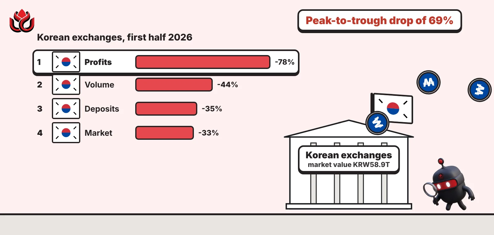
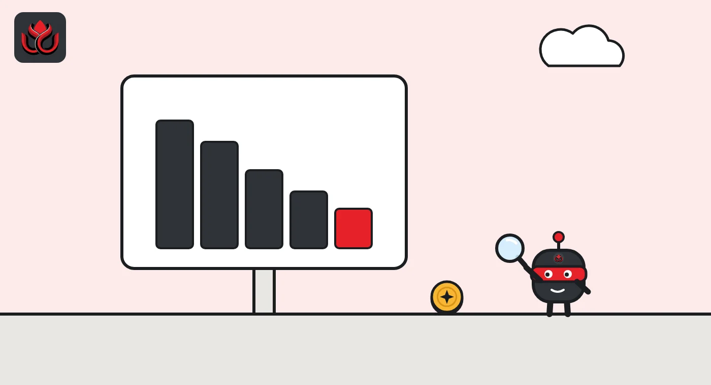
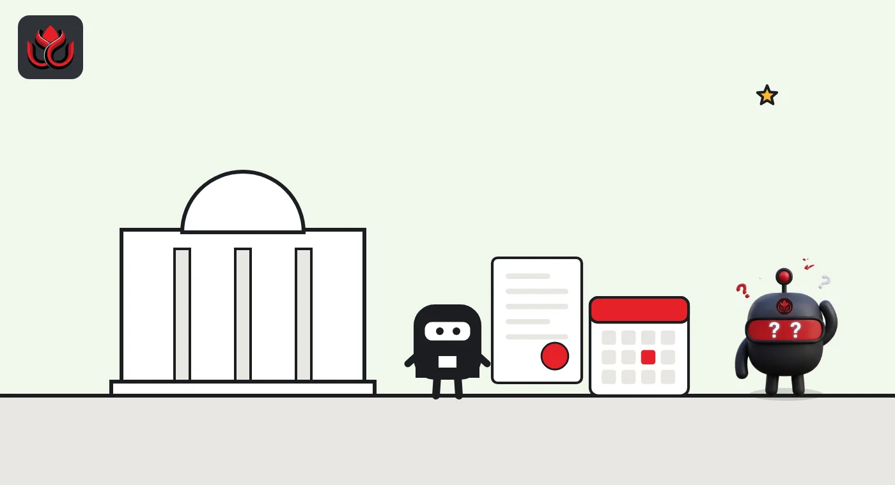

Korea's crypto exchanges lost a third of their market in six months. Profits fell 78%
Official KoFIU data for the first half of 2026 shows market value, trading and won deposits all collapsing, with a 69% peak-to-trough drop that was worse than the stock market's. Exchange profits took the biggest hit.

Key points
- Market capitalization on Korean crypto exchanges fell KRW28.3 trillion (33%) to KRW58.9 trillion in the first half of 2026, KoFIU and the FSS said on October 1.
- Average daily trading volume dropped 44% and won deposits 35%. Exchange operating profits fell 78% even though user accounts rose 0.4%.
- The same day, the FSC proposed rules to allow tokenized stocks, bonds and funds from February 4, 2027, with comments open until November 11, 2026.
What DeepSea's data shows
On-chain, Korean exchanges look small next to the big global Asian venues. In the week of October 5 to 11, DeepSea tracked $92.21M of deposits to South Korean exchanges and $95.98M of withdrawals, a net outflow of $3.77M, according to its weekly report. Coinone alone took in $55.54M and sent out $56.87M.
The next week, October 12 to 18, South Korean exchanges saw $68.06M in and $68.40M out, a net outflow of $341.3K, DeepSea said. Coinone turned slightly positive at +$1.28M. For comparison, Binance alone lost $2.12B net that week. DeepSea covers labeled wallets on six chains and not BSC, so these figures show only part of Korean exchange traffic.
Data: DeepSea (desea.io), checked November 1, 2026, 11:30 p.m. ET.
What happened
The total value of crypto on South Korea's domestic exchanges fell by KRW28.3 trillion, or 33%, to KRW58.9 trillion in the first half of 2026. Exchange operating profits fell 78%, according to a survey published on October 1, 2026 by the Korea Financial Intelligence Unit (KoFIU) and the Financial Supervisory Service (FSS).
The survey covers 26 registered virtual asset service providers (VASPs), including 17 exchanges and nine custody and wallet firms, from January 1 to June 30, 2026. Average daily trading volume fell by KRW2.3 trillion, or 44%. Won deposits held at exchanges fell by KRW2.9 trillion, or 35%.
The maximum drawdown, meaning the biggest fall from a peak to a low during the period, was 69%. That compares with 55.1% for the KOSPI and 31.8% for the KOSDAQ over the same six months, according to the survey.
Fewer coins, thin markets
Exchanges that let users trade with Korean won still dominate. Coin-only exchanges, which offer only crypto-to-crypto pairs, held 0.6% of total market value. Their daily volume fell 55%. Monthly turnover, a measure of how often holdings change hands, ran at 100% to 201% on won exchanges but only 2% to 9% on coin-only venues.
The number of distinct tokens in circulation fell 5%, from 712 at the end of 2025 to 673. Of those, 234 were listed on only one exchange. Together they were worth KRW0.6 trillion, about 1% of the market. KoFIU flagged that 93 of these single-exchange tokens, or 40%, each had a market value of KRW100 million or less, and warned of liquidity and price swing risks.
Korean crypto exchanges, change in H1 2026
% change

Revenue down, staff flat
User numbers barely moved: accounts eligible to trade rose 0.4%. But with less trading, exchange sales fell 41% and operating profits fell 78%. Staff numbers held at 2,021, down 10. Of those, 213 work in anti-money laundering (AML), one more than before.
Transfers out of exchanges to other registered firms fell 41%. Of external transfers, 15% fell under the travel rule (which requires sender and receiver details to travel with a transfer), while 83% went to whitelisted overseas entities and personal wallets. Transfers under KRW1 million totaled KRW1.6 trillion: only 2% of the value, but 63% of the users.
Custody and wallet firms did worse. Users rose by 13, or 2%, but assets in custody fell KRW76.7 billion (25%) and operating profit fell by KRW9.4 billion, or 101%, the survey showed.
Tokenized securities are coming in 2027
On the same day, the Financial Services Commission (FSC) proposed detailed rules to let securities be issued and traded in tokenized form from February 4, 2027. Stocks, bonds, funds and fractional investment securities would qualify.
The distributed ledgers must be shared by at least two account management firms plus the Korea Securities Depository, and firms may not charge fees directly for using the ledger. Issuers that run customer accounts themselves need at least KRW4 billion of equity capital, plus at least one account management professional, one internal control professional and two IT staff.
The FSC also plans a new over-the-counter exchange license for debt securities, because it expects more retail trading in tokenized bonds. Retail investors would be capped at KRW100 million of net purchases a year on each over-the-counter exchange. Comments run from October 2 to November 11, 2026.

Timeline
Cabinet approves rule changes to tighten VASP registration and AML requirements
KoFIU and FSS publish H1 2026 VASP survey
FSC proposes tokenized securities rules
Comment period on tokenized securities rules ends
Tokenized securities regime takes effect
LC Insight analysis
This section is our reading of the facts above, not a statement of fact.
- The 78% profit drop matters more than the volume figures. Korean exchanges depend heavily on trading fees, and lower income makes the AML and security spending regulators demand harder to fund.
- The single-exchange token data reads like an early warning. With 40% of exclusively listed tokens worth KRW100 million or less each, expect more delistings and tighter listing reviews.
- Korea is building tokenized securities inside the regulated securities system, not on crypto exchanges. That points to banks and brokers, not today's crypto platforms, leading the first wave.
What's next
- KoFIU's H2 2026 survey (the H2 2025 edition came out on March 25, 2026)
- Final tokenized securities rules after November 11
- Delistings of thinly traded single-exchange tokens
Disclaimer. This article is based on public information and the sources listed below as of the update time shown. It is for information only and is not investment, legal or tax advice. Figures may change as companies and authorities publish new data.
Sources
- FSC, KoFIU Unveils H1 2026 Survey Result on Virtual Asset Service Providers (October 1, 2026)
- FSC, FSC Proposes Rules Change to Pave Way for Tokenization of Securities Issuance and Circulation (October 1, 2026)
- FSC, Rules Change Approved to Strengthen Registration and Anti-Money Laundering Requirements of VASPs (August 11, 2026)
- DeepSea, Asian KOL Weekly Report with exchange flows, October 5 to 11, 2026
- DeepSea, Asian KOL Weekly Report with exchange flows, October 12 to 18, 2026